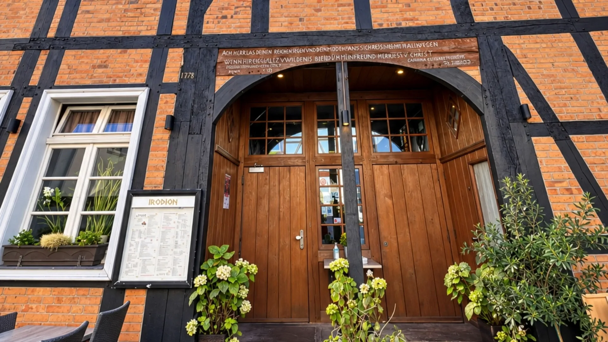
Irodion. Griechische Küche am Roggenmarkt.
Seit 1983 dieselbe Familie, dasselbe Fachwerkhaus in der Lünener Altstadt.
Tisch reservieren 02306 12864
Benannt nach einem Theater in Athen.
Am Fuß der Akropolis steht ein antikes Theater, fünftausend Plätze, gestiftet von Herodes Atticus. Auf Griechisch heißt es Ηρώδειο, und gespielt wird dort bis heute. Wir haben unser Haus danach benannt, weil sich an diesem Ort seit zweitausend Jahren Leute treffen, um einen Abend miteinander zu verbringen. Mehr wollten wir am Roggenmarkt eigentlich auch nie: dass Sie sich hinsetzen, in Ruhe essen und es nicht eilig haben müssen.
Ein Haus, eine Familie, drei Umbauten.
1983 haben wir hier aufgemacht, im Fachwerkhaus am Roggenmarkt. Die Adresse hat sich seitdem nicht geändert, nur das Haus ist mitgewachsen. Dreimal haben wir seitdem angefasst, was nötig war, und die Nischen stehen immer noch da, wo sie immer standen. Wer öfter kommt, den begrüßen wir beim Namen. Und wer zum ersten Mal kommt, wird genauso herzlich empfangen wie alle anderen: Kalós ílthate, schön, dass Sie da sind.
- 1983eröffnet
- 1990umgebaut
- 2010modernisiert
- 2017erweitert
Ein Rundgang durchs Haus.
-
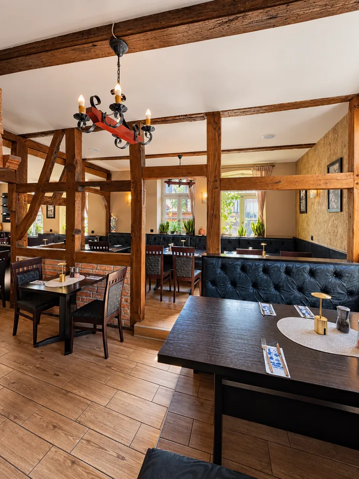
-
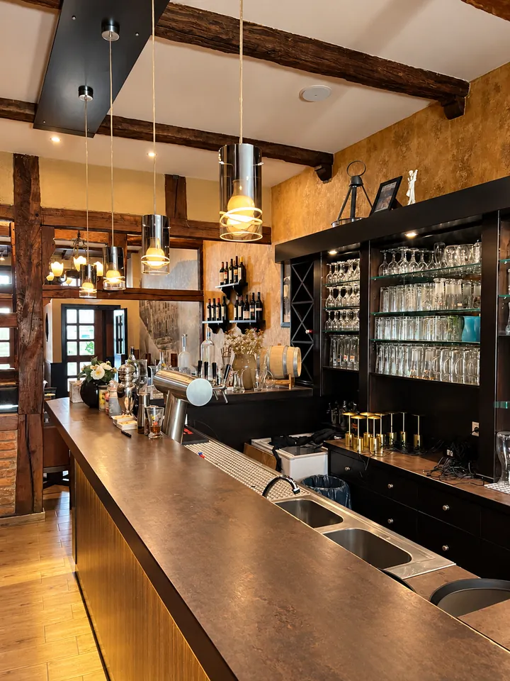
-
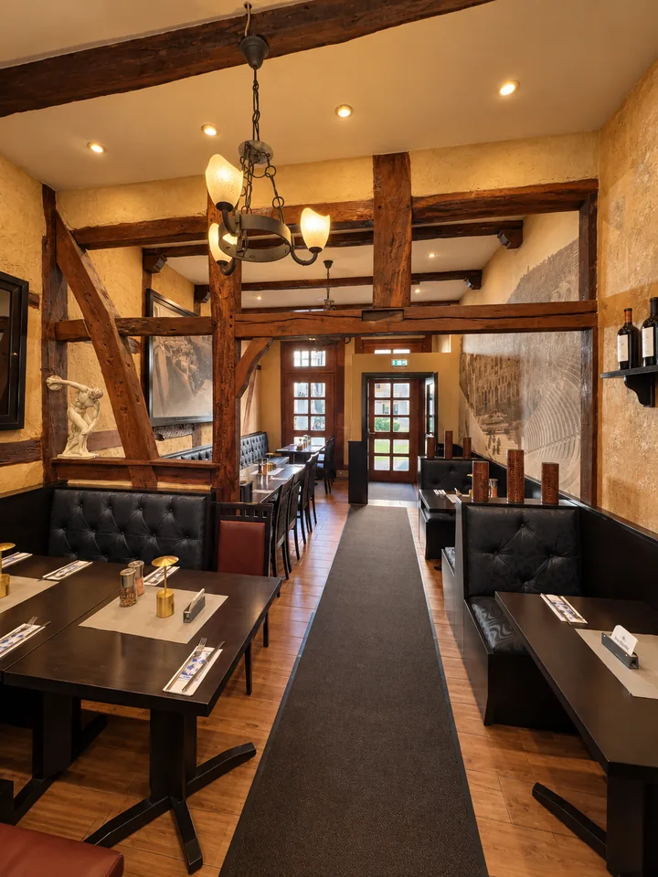
-
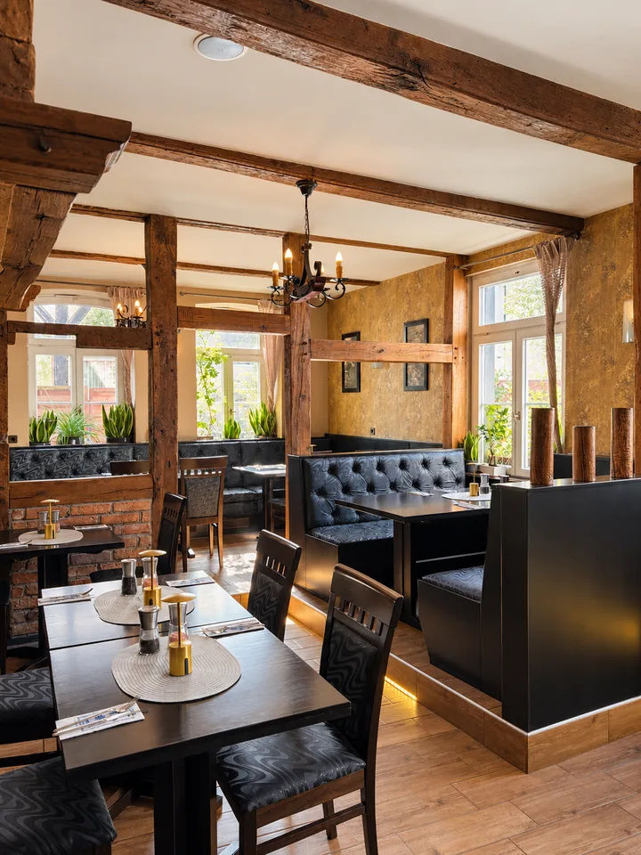
-
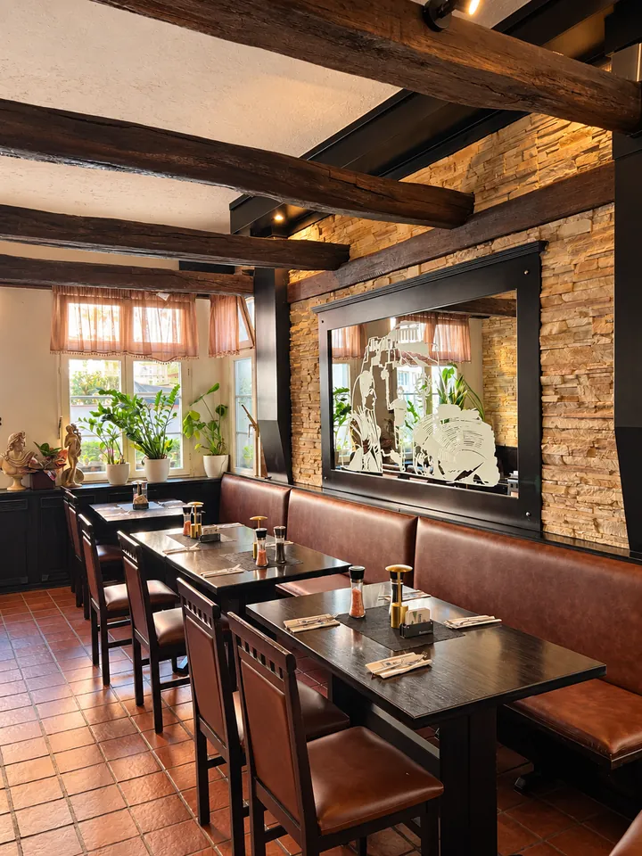
-
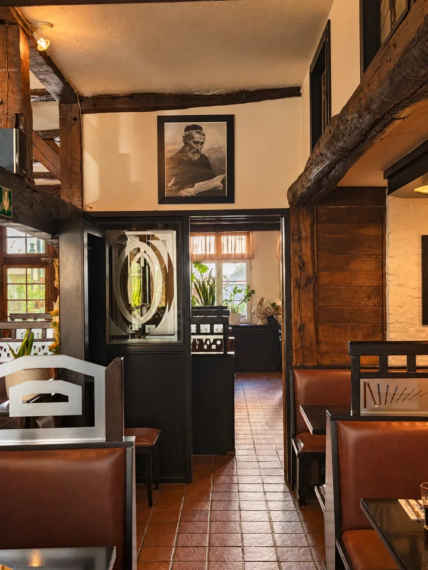
-
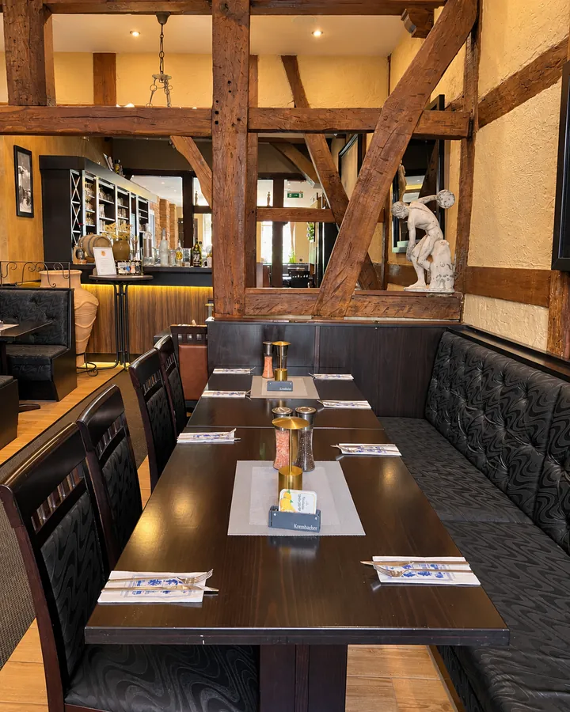
-
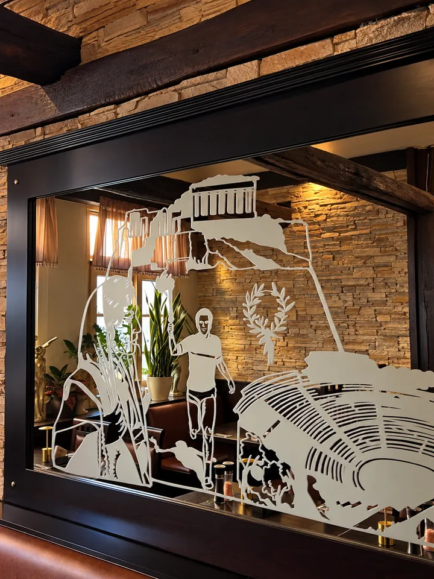
-
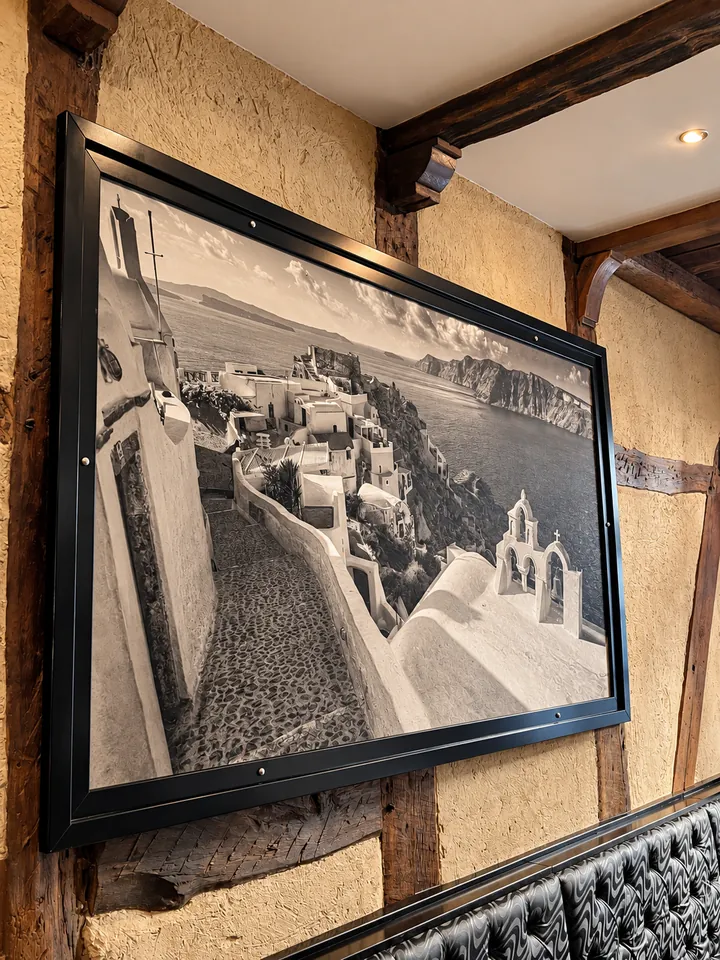
-
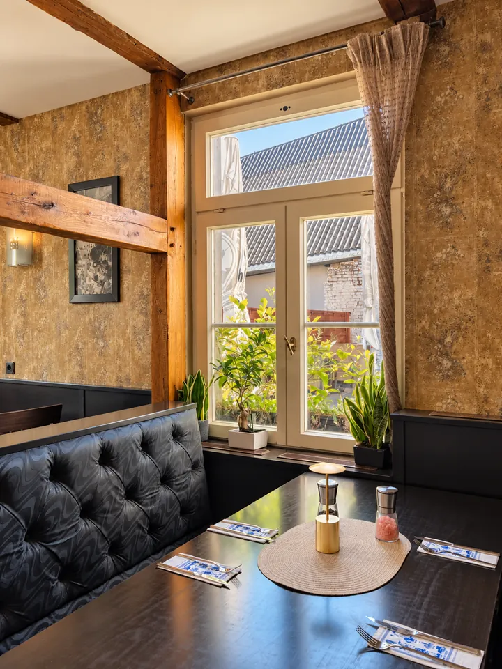
-
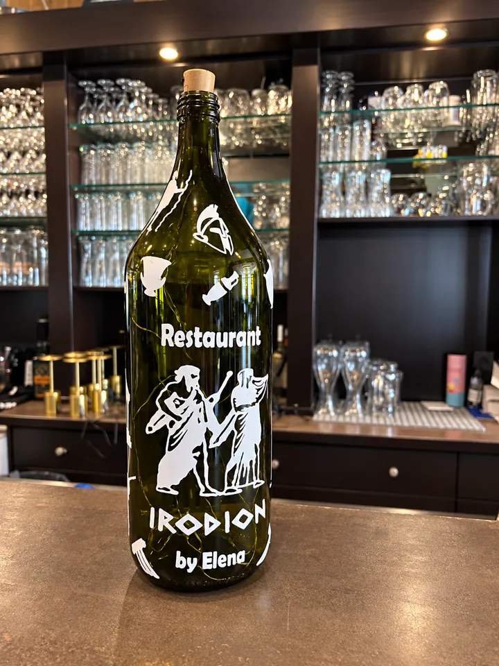
Die Stammgäste bestellen mit einer Zahl.
Wenn Sie mehr werden, haben wir Platz.
2017 haben wir dafür angebaut. Seitdem teilen wir den Raum so, wie Sie ihn brauchen: mehrere kleine Runden oder eine lange Tafel. Ob Geburtstag, Taufe oder Firmenessen, sagen Sie uns am Telefon, wie viele Sie sind und was gefeiert wird. Den Rest stellen wir, und Sie kommen einfach.
Feier besprechen 02306 12864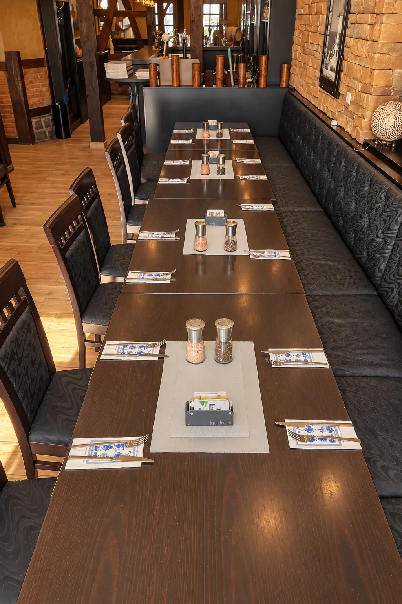
Bei gutem Wetter sitzen Sie draußen.
Dann klappen wir die Schirme auf und decken draußen auf dem Kopfsteinpflaster am Roggenmarkt, mitten zwischen den Fachwerkhäusern. Ein guter Platz für einen langen Sommerabend. Und wer lieber zu Hause isst: Rufen Sie vorher an, dann steht alles fertig da, wenn Sie kommen.
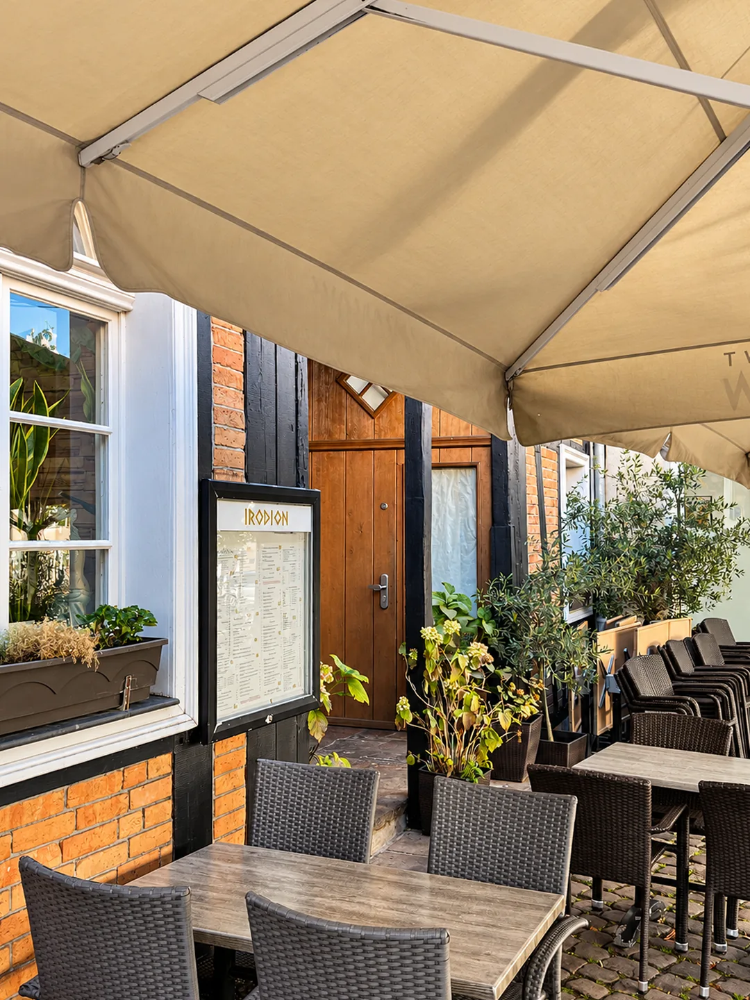
Öffnungszeiten
| Montag | 11:30 bis 14:30 17:00 bis 22:30 |
|---|---|
| Dienstag | 11:30 bis 14:30 17:00 bis 22:30 |
| Mittwoch | Ruhetag |
| Donnerstag | 11:30 bis 14:30 17:00 bis 22:30 |
| Freitag | 11:30 bis 14:30 17:00 bis 23:00 |
| Samstag | 11:30 bis 14:30 17:00 bis 23:00 |
| Sonntag | 11:30 bis 14:30 17:00 bis 22:30 |
Warme Küche mittags bis 14:00 Uhr, abends bis 22:00 Uhr. An Feiertagen haben wir offen, auch mittwochs.
Rufen Sie an, dann steht der Tisch.
02306 12864Lieber schreiben? irodion1@freenet.de. Wir antworten, sobald im Haus eine ruhige Minute ist.
Roggenmarkt 19, 44532 Lünen
Anfahrt planen
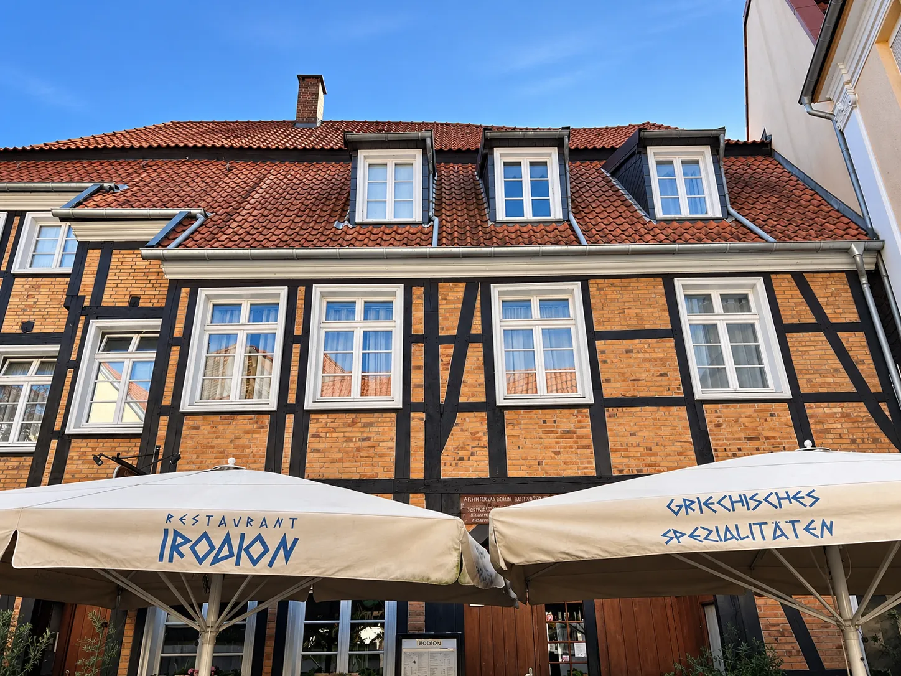